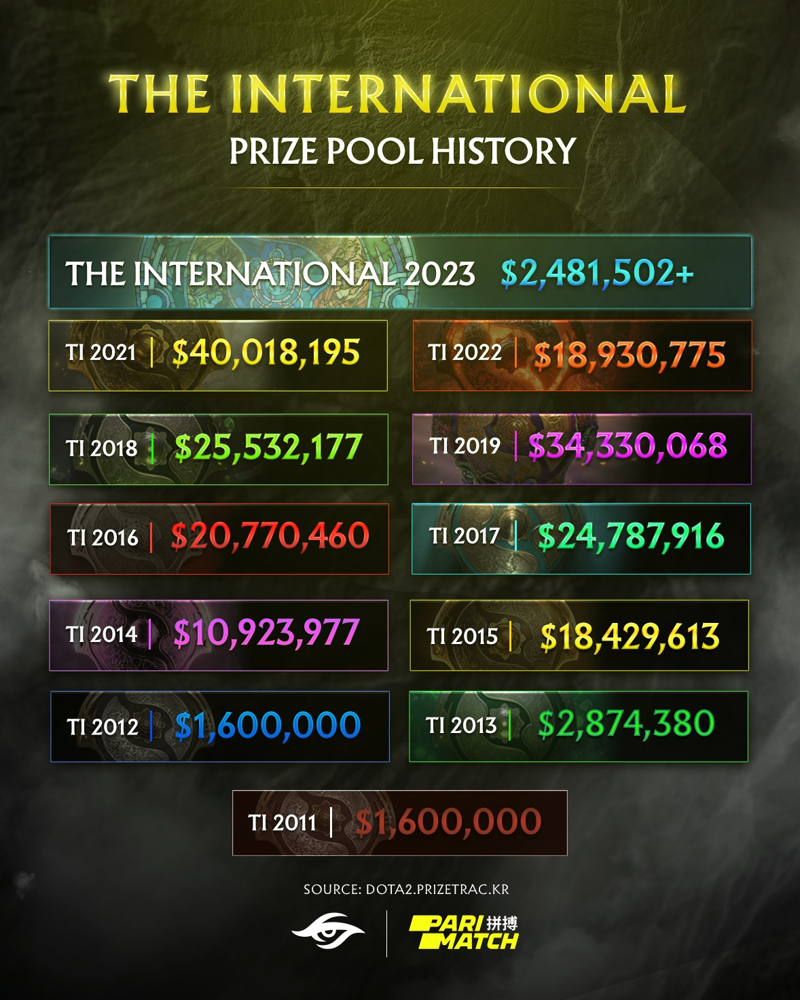

Gabe Logan Newell: Products
Gaben has founded multiple games,platfrom and game engine
- In total of 24 games have been created by Valve which is founded by Gabne and still managed by Gaben until this day
- 1998 ~ Half-Life
- 1999 ~ Half-Life: Opposing Force
- 2000 ~ Half-Life: Counter Strike
- 2000 ~ Gunman Chronicles
- 2001 ~ Half-Life: Blue Shift
- 2003 ~ Homeworld 2
- 2004 ~ Counter Strike: Condition Zero
- 2004 ~ Vampire: The Masquerade - Bloodlines
- 2004 ~ Counter Strike: Source
- 2005 ~ Half Life 2: Lost Coast
- 2005 ~ Day of Defeat: Source
- 2006 ~ Half Life 2: Episode 1
- 2007 ~ Half Life 2: Episode 2
- 2007 ~ Portal
- 2007 ~ The Orange Box
- 2008 ~ Left 4 Dead
- 2009 ~ Left 4 Dead 2
- 2011 ~ Deus Ex: Human Revolution
- 2011 ~ Portal 2
- 2012 ~ Counter Strike: Global Offensive
- 2013 ~ Dota 2
- 2016 ~ The Lab
- 2018 ~ Artifact
- 2019 ~ Dota Underlord
- 2023 ~ Counter Strike 2
- Out of the 24 games the most popular till this day is Counter Strike 2 and Dota 2 Which both is a Competitive game. There are Multiple tournement every year for both game with a prize pool up to 40 million US dollar at The International DOTA2 Championships which is the largest tournement every year.

- Other than that, out of the 24 games Gaben has received multiple awards. The Left 4 Dead game he created has been awarded as 2009 Best Multiplayer and Left 4 Dead 2 has been awarded 2010 Best Multiplayer Half-life 2 was voted the Best Game of the Year at the Game Developer Choice Awards and in 2010 Gaben has obtained the Pioneer Award
- In October 2017, Forbes Listed Gaben as the Top 100 richest people in technology, with a networth of 5.5 billion USD